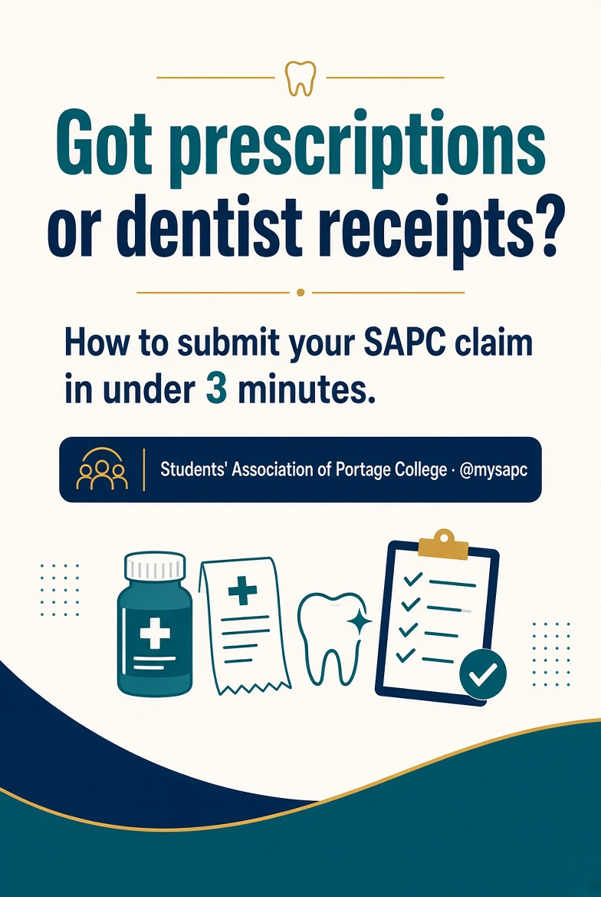
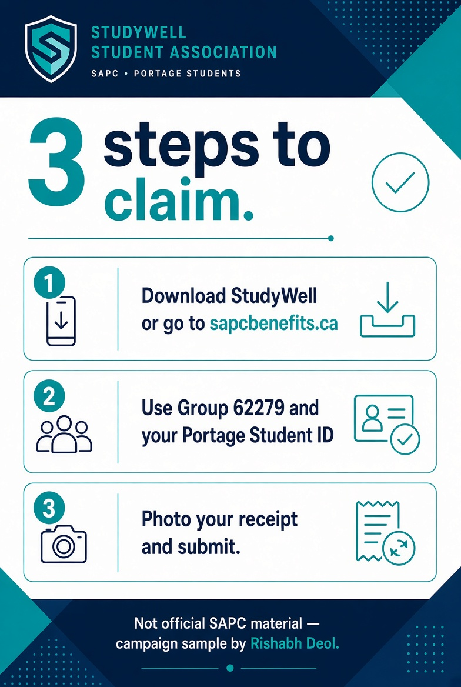
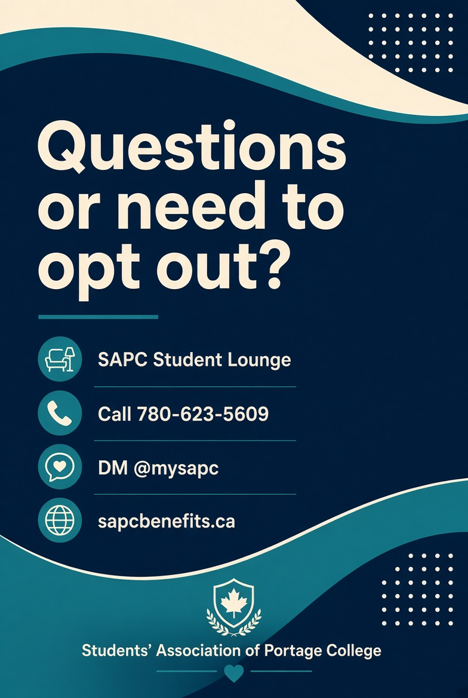
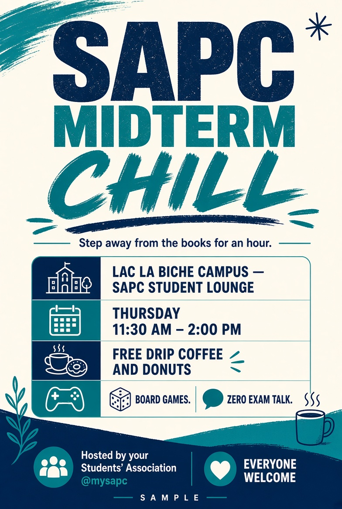
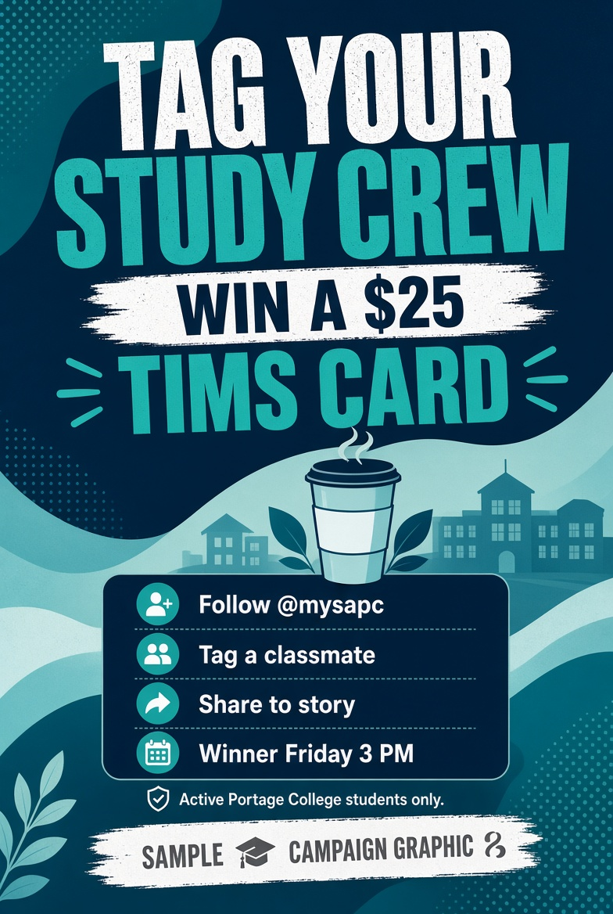

Carousel · Health & Dental
Claim in under 3 minutes
Sends students to StudyWell / sapcbenefits.ca instead of guessing the process in a DM thread.
Portage College · Lac La Biche · Community Social Work
I’m Rishabh Deol, a Community Social Work student on the Lac La Biche campus, applying for SAPC Digital Media Coordinator. This page is the work sample: mock posts built with the real handles, the real benefits site, and the real student questions that hit the office every fall.
Graphics below are campaign samples, not live SAPC posts. Handle used: @mysapc. Benefits facts point to sapcbenefits.ca, StudyWell, Group 62279, and 780-623-5609.
Work samples

Sends students to StudyWell / sapcbenefits.ca instead of guessing the process in a DM thread.

The three facts students need: the app, the group number, a clear receipt photo.

Opt-out and stuck-claim traffic belongs with SAPC. Office line is on the graphic.

Lounge event, not athletics branding. Thursday window matches midday campus traffic.

Follow + tag + story share. Friday draw. Active Portage students only.
B-roll only — no fake talking head. Overlay captions in Canva: Midterms hitting hard / Free coffee at the lounge / Thursday 11:30.
Midterm season is here. We’re fueling your next study session.
1. Follow @mysapc
2. Tag a classmate who gets you through study crunch (1 tag = 1 entry)
3. Bonus: share this post to your Story and tag @mysapc
Winner drawn Friday at 3:00 PM. Must be an active Portage College student to claim.
Mapped to the posting
Regular Instagram and Facebook posts with dates, locations, and the real @mysapc handle.
Posters and short reels for lounge events and simple giveaways with clear rules.
StudyWell, sapcbenefits.ca, Group 62279, lounge or 780-623-5609.
Canva, short-form video, Teams, and Office.
Transferable work
Cook and food-counter work in Edmonton: orders, sanitation, opening and closing.
Community Social Work plus years of customer service. Good for DMs about claims and events.
English, Hindi, and Punjabi.
Logistics
Up to 25 hrs/week or more (flexible around CSW classes).
Lac La Biche campus. Ready to work from the SAPC office.
Canva, Microsoft Office, Microsoft Teams, Instagram, Facebook.
Available on email anytime.